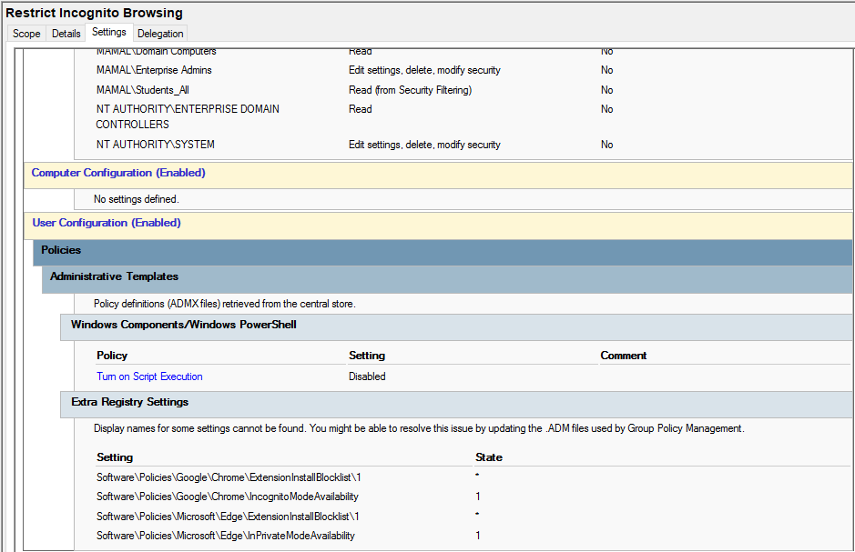

Restrict Incognito Mode (Chrome)
Purpose
This policy disables Google Chrome Incognito mode for users in the computer lab environment. It is used to ensure all browsing activity is visible and enforce accountability during system usage.
How it works
The Group Policy modifies Chrome settings to disable private browsing mode. Once applied, users will no longer be able to open Incognito windows or bypass browsing restrictions.
How it is applied
- Open Group Policy Management Console (GPMC)
- Edit the User Configuration policy
- Navigate to: User Configuration → Administrative Templates → Google Chrome → Incognito Mode Availability
- Set policy to Disable Incognito Mode
- Apply changes and run
gpupdate /force
Impact
- Prevents private browsing in Chrome
- Ensures full visibility of user activity
- Supports monitoring and lab discipline
- Works alongside website blocking policies
Screenshot
Incognito restriction policy in Group Policy Editor:
